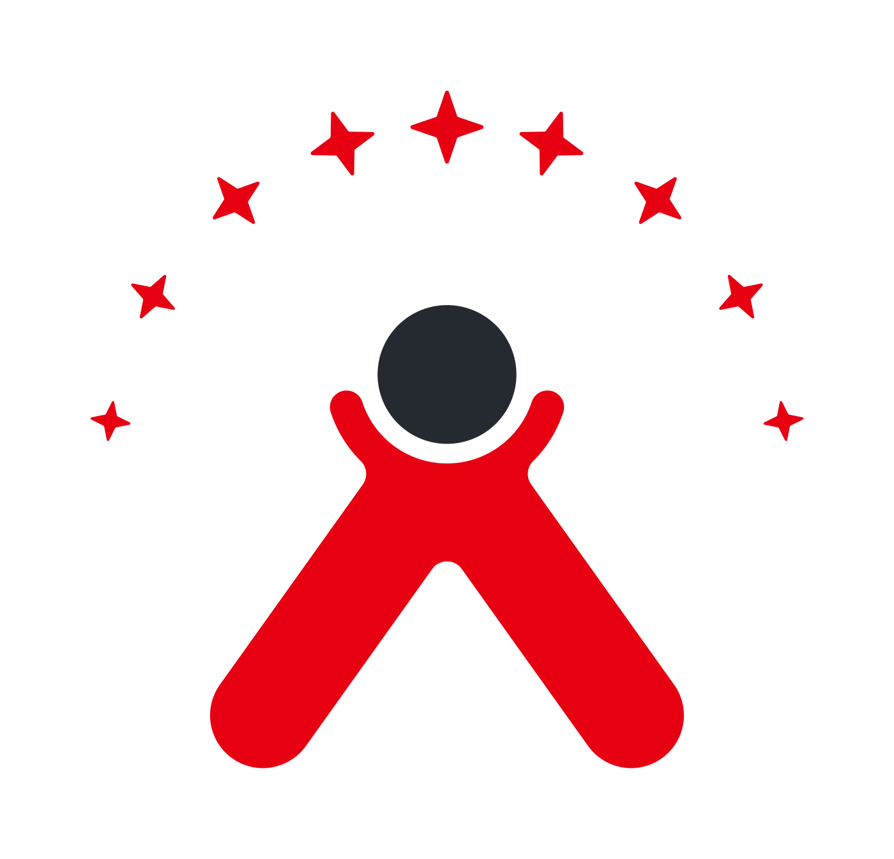

インフラ
ネットワーク・通信・サーバー・クラウド
インフラ、ソフトウェア開発、AI活用。お客様の課題に合わせて、最適な技術と実行体制をご提案します。
設計・構築から更改、移行、運用・保守まで、インフラ領域の技術支援に対応します。
要件定義・設計から実装、各種テスト、導入・リリース、保守運用まで、工程に応じた技術者・開発体制をご提案します。
計画策定から進捗・課題・リスク・品質・コスト管理、関係者調整まで、プロジェクトの円滑な遂行と目標達成を支援します。
サイバーセキュリティ対策や脆弱性診断、SOC・CSIRT業務など、案件に応じた体制で支援します。
業務内容、役割、必要なスキル、開始時期・期間、勤務地や勤務条件などをお知らせください。
業務範囲や条件、ご不明点を確認し、対応に必要な情報を整理します。
当社での対応可否を確認し、必要に応じて協業先（他のSES事業者等）との体制を検討します。
対応可能な場合、体制や条件に応じたお見積りと候補者情報をご提示します。
必要に応じて関係者間で面談を行い、役割や開始日などの条件を調整します。
条件合意後に契約手続きを行い、合意した開始日に業務を開始します。
案件の内容により、確認や調整の順序は前後します。概要が固まっていない段階でもご相談いただけます。
通信ネットワーク・インフラ
通信キャリア向け伝送ネットワーク機器（PTN等）の運用・保守、バージョンアップ・機能更新に伴う技術支援をはじめ、コアネットワーク関連サーバー・ソフトウェアの仕様変更、機能改修、動作試験・検証まで対応。
業務システム更改・移行
現行システムの課題・影響分析から移行方式の検討、移行計画・スケジュールの策定、各種手順書・仕様書の作成、関係部署・ベンダーとの調整、テスト計画・設計、移行リハーサル、移行データの整合性検証まで、システム更改・移行プロジェクトを一貫して推進。
通信ソフトウェア・プロトコル対応
3G／PHS／Wi-Fi対応の通信接続ツールの仕様調整・機能改修をはじめ、VPN接続機器のソフトウェア開発、IPsec・KINKなどの認証機能や通信プロトコルの設計・実装・検証に対応。
組込みソフトウェア・機器制御
決済端末向け通信モジュールや医療用モニターの制御アプリケーションの設計・開発・改修を実施。機器固有の仕様や動作要件に応じた機能実装から、動作確認・検証まで対応。
掲載しているのは対応案件の一部です。取引先名は非公開としています。
開発の目的、必要な機能、ご予算、納期などを伺います。
ご要望をもとに開発範囲を整理し、お見積りをご提示します。
開発内容と条件に合意後、契約手続きを行い、開発に着手します。
開発とテストを行い、成果物をご確認いただきます。
確認完了後、成果物を納品し、ご希望に応じて公開します。
AI活用支援では、導入テーマの検討や情報活用、業務効率化・自動化など、企業の課題に応じた活用方法をご提案します。現場分析から開発・検証・定着までの具体的な進め方は、FDE支援ページをご覧ください。
業務分析を行い、業務フローの可視化・改善を支援します。
情報検索、ナレッジ共有、案件履歴・情報管理を支援します。
生成AIによる資料作成、要約、データ整理などを支援します。
AIエージェントやタスク管理などを活用した業務自動化を支援します。
インフラ、セキュリティ、PM/PMO、ソフトウェア開発、AI(FDE)などの分野で、案件に応じて人材・協業のご相談を受け付けています。全国からご相談いただけます。
ネットワーク・通信・サーバー・クラウド
SOC/CSIRT、EDR/XDR、脆弱性対策
計画・進捗・課題管理、ベンダー調整
業務システム、Web・アプリ、組み込み
Python・LLM・RAG・AIエージェントで業務課題を解決

※ 記載のない分野も、案件に応じてご相談ください。